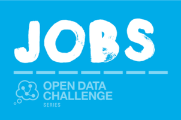

Paid opportunity: help bring the value of open data to the jobs sector
The Open Data Institute and Nesta (the UK’s innovation foundation) have been working in partnership since March 2012 to deliver a series of Challenge Prizes. These Open Data Challenges are designed to encourage, enable, incentivise and support individuals and teams to use open data for social good.
Participants in each challenge are supported through a carefully designed process to create new products and services that answer specific social challenges (framed as a challenge question) whilst focusing on user needs and using open data. Ultimately one team, and one product or service in each challenge, will win a cash prize of up to £50,000.
An essential part of each Challenge Delivery Team is the Challenge Champion - a sector specialist appointed on a part-time basis to complete a series of specific deliverables over the duration of the challenge. Could this be you?

We’re looking for someone who is passionate and knowledgeable about the sector, and who is well networked and/or keen to develop networks amongst entrepreneurs, designers and innovators in the area. We anticipate that the role will take c. 15 days total over the coming 7/8 months, and the successful candidate would need to manage their time and involvement accordingly. The full details of the assignment can be found in the attached assignment description, please have a look, share this blog with your networks and apply if you think you would enjoy this opportunity.
About the application process
Please submit your expressions of interest (to include your CV, Twitter handle/blog address where relevant and proposed day rate) along with your answers to the following three key questions to [email protected] by midday on Monday 2 February:
What is an example of an activity that you have undertaken which demonstrates how you have brought entrepreneurs, designers and/or developers together to work towards social impact? (200 words.)
What do you believe is the greatest challenge in the jobs sector today? (200 words.)
How would you ensure people were motivated and excited to participate in the challenge? (200 words.)
Interviews will take place in London (or via Skype) on Thursday 5 February and candidates will be informed of the final outcome by Friday 6 February, wherever possible.
If you would like to find out more about the challenge, and contribute to the definition of the challenge question, please join us at the Challenge Definition Day, Hub Westminster, Tuesday 20 January 13:00-17:00 RSVP here.
If you have questions related to the assignment or your application, please contact [email protected]